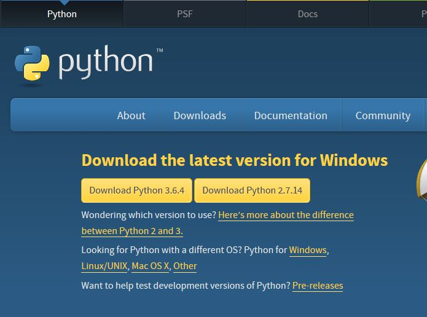

Python is one of the most used and most versatile programming languages in the world. You can create art with it, design websites with it and much more.
There are 2 type of python. Python 2 and Python 3. The differences are that Python 2 is older, slightly harder to use but has more software for it and Python 3 is newer, slightly easier to use but there is less software for it. These tutorials use Python 2.
To download Python 2, click here or on the picture below and download the latest python 2 (the yellow box that says "Download Python 2" with some numbers on the end).
You should see a little pop-up called something along the lines of "Python Setup Wizard". Do what it tells you to do until you get a screen like the picture below.

At the prompt(the >>> on the 3rd line), type print "Hello!"
Under the line you just typed, it should say Hello!
Wow! You just typed your first code! But what does it all mean?
Let's break it down. The print tells Python to put whatever is in the speech marks (the " and ") on the next line. You can put anything you want in between the speech marks except the backslash (\) and more speech marks.
The next part of the tutorial is variables. Click here.